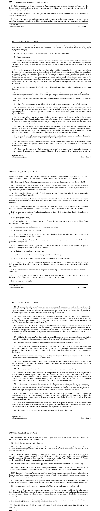

art-223-LSST : pouvoir réglementaire de la Commission
Un article du wiki ⚖️ Recueil législatif
En bref
Article habilitant : il énumère les matières, numérotées de 1° a 42° (certaines abrogées), sur lesquelles la Commission peut légiférer par règlement. C'est la source de la plupart des règlements SST.
- Milieu de travail : catégories d'établissements et de chantiers, aménagement des lieux, normes d'hygiène et de sécurité, contaminants et matières dangereuses, équipements de protection collectifs et individuels, registres et affichage.
- Personnes et seuils chiffrés : âge minimum pour exécuter un travail identifié (11°), nombre d'heures maximum par jour ou par semaine, distribution des heures et période minimum de repos ou de repas (12°), examens de santé de pré-embauche et en cours d'emploi, leur contenu et leur fréquence (13°).
- Produits dangereux (SIMDUT) : définition et classification (21.1°), exclusions (21.2°), étiquetage et affichage (21.4°), fiches de données de sécurité (21.5°), contenu minimum du programme de formation de l'article 62.5 (21.6°).
- Structures paritaires : comités de santé et de sécurité et leurs règles de fonctionnement (22°), temps de libération du représentant en santé et en sécurité (23°), subvention aux associations sectorielles (27°), comités de chantier, représentants et coordonnateurs sur les chantiers (31° a 32.1°).
- Fermeture de la liste : le 42° autorise généralement toute autre mesure utile ; le contenu peut varier selon les catégories visées et un règlement peut renvoyer a une approbation, une certification ou une homologation du Bureau de normalisation.
🌐 LegisQuébec · 📄 PDF officiel (page 62)
Texte officiel : capture du PDF
{kind=link}

Toucher l'image pour l'agrandir🔗 Ouvrir a cette page : LSST.pdf : page 62 · texte a jour au 26 mars 2024
Voir aussi
- art. 221 : dispositions applicables au chantier · obligation : la Commission détermine les dispositions qui doivent s'appliquer sur le chantier pendant la durée des travaux, précisant notamment le rôle de chaque acteur en matière de santé et de sécurité.
- art. 222 : communication des dispositions chantier · la Commission communique les dispositions déterminées en vertu de l'article 221 au maître d'œuvre et aux associations représentatives.
- art. 223.1 : règlements gouvernementaux sur exemptions SIMDUT · faculté : le gouvernement peut, par règlement, déterminer les modalités de présentation d'une demande d'exemption, fixer les critères d'appréciation et établir les règles de procédure applicables à l'organisme visé à l'article 62.14.
- art. 223.2 : disposition abrogée · disposition-abrogee-223-2.
- 🔧 Modifié par : LMRSST · Article modificateur de la LMRSST.
- ↑ Loi : LSST
Pages qui pointent ici (14)
- art-221-LSST : dispositions applicables au chantier Recueil législatif
- art-222-LSST : communication des dispositions chantier Recueil législatif
- art-223.1-LSST : règlements gouvernementaux sur exemptions SIMDUT Recueil législatif
- art-224-LSST : approbation gouvernementale des règlements Recueil législatif
- art-225-LSST : pouvoir supplétif du gouvernement Recueil législatif
- art-232-LMRSST : modifie l'art. 223 LSST Recueil législatif
- art-60-LSST : transmission du programme de prévention Recueil législatif
- art-88-LSST : désignation du représentant par avis écrit Recueil législatif
- LMRSST : Chapitre II : Modifications à la LSST Recueil législatif
- LSST Recueil législatif
- LSST : Chapitre VIII : Pénalités et infractions Recueil législatif
- LSST, droits et obligations Droit du travail
- PDFs de jurisprudence et de doctrine Recueil législatif
- RSST Recueil législatif